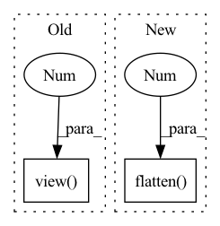

Pattern ID :1086
Before Change
if self.drop_rate > 0.:
x = F.dropout(x, p=self.drop_rate, training=self.training)
out = self.classifier(x)
return out.view( out.size(0), -1 )
@register_model
def dpn68(pretrained=False, num_classes=1000, in_chans=3, **kwargs):After Change
if self.drop_rate > 0.:
x = F.dropout(x, p=self.drop_rate, training=self.training)
out = self.classifier(x)
return out.flatten(1 )
@register_model
def dpn68(pretrained=False, num_classes=1000, in_chans=3, **kwargs):In pattern: SUPERPATTERN
Frequency: 3
Non-data size: 2
Instances Fragment ID: 3384419
Project Name: feng-lab/pytorch-image-models
Commit Name: 3bef524f9c45a713eabce808124c9fc5ac0971a0
Time: 2019-11-29
Author: rwightman@gmail.com
File Name: timm/models/dpn.py
M Class Name: DPN
N Class Name: DPN
M Method Name: forward(2)
N Method Name: forward(2)
M Parent Class: nn.Module
N Parent Class: nn.Module
M File Name: timm/models/dpn.py
N File Name: timm/models/dpn.py
M Start Line: 245
M End Line: 246
N Start Line: 240
N End Line: 245
Before Change
patches = self.proj(x) // BCHW
B, C, H, W = patches.size()
patches = patches.view( B, C, -1 ) .permute(0, 2, 1) // (batch_size, num_patches, d_model)
cls_tokens = self.cls_token.expand(B, -1, -1) // (batch_size, 1, d_model)
// concate cls_tokens to patches
embeddings = torch.cat([cls_tokens, patches], dim=1) // (batch_size, num_patches + 1, d_model)After Change
B, C, (H // self.patch_size[0]), self.patch_size[0], (W // self.patch_size[1]), self.patch_size[1]
)
// (B, H", W", C, ph, pw) -> (B, H"*W", C*ph*pw)
patches = x.permute(0, 2, 4, 1, 3, 5).flatten(1, 2).flatten(2 , 4)
patches = self.proj(patches) // (batch_size, num_patches, d_model)
cls_tokens = self.cls_token.expand(B, -1, -1) // (batch_size, 1, d_model)
// concate cls_tokens to patches Fragment ID: 3384418
Project Name: mindee/doctr
Commit Name: a95baaa8c71b859eae1c3292b3bd4225aa410ee5
Time: 2022-09-15
Author: felixdittrich92@gmail.com
File Name: doctr/models/modules/vision_transformer/pytorch.py
M Class Name: PatchEmbedding
N Class Name: PatchEmbedding
M Method Name: forward(2)
N Method Name: forward(2)
M Parent Class: nn.Module
N Parent Class: nn.Module
M File Name: doctr/models/modules/vision_transformer/pytorch.py
N File Name: doctr/models/modules/vision_transformer/pytorch.py
M Start Line: 42
M End Line: 45
N Start Line: 45
N End Line: 50
Before Change
out = F.relu(self.bn2(self.conv2(out)))
// NOTE: change pooling kernel_size 7 -> 4 for CIFAR10
out = F.avg_pool2d(out, 4)
out = out.view( out.size(0), -1 )
out = self.linear(out)
return out
After Change
def forward(self, x: Tensor) -> Tensor:
x = self.features(x)
x = nn.functional.adaptive_avg_pool2d(x, (1, 1))
x = torch.flatten( x, 1 )
x = self.classifier(x)
return x
def _initialize_weights(self) -> None: Fragment ID: 3384422
Project Name: tuttelikz/farabio
Commit Name: 1d44294f1fa3a0a8cd95bdbad9f2e4f53b43098b
Time: 2021-08-02
Author: s.askaruly@gmail.com
File Name: farabio/models/classification/conv/mobilenetv2.py
M Class Name: MobileNetV2
N Class Name: MobileNetV2
M Method Name: forward(2)
N Method Name: forward(2)
M Parent Class: nn.Module
N Parent Class: nn.Module
M File Name: farabio/models/classification/conv/mobilenetv2.py
N File Name: farabio/models/classification/conv/mobilenetv2.py
M Start Line: 69
M End Line: 77
N Start Line: 134
N End Line: 139